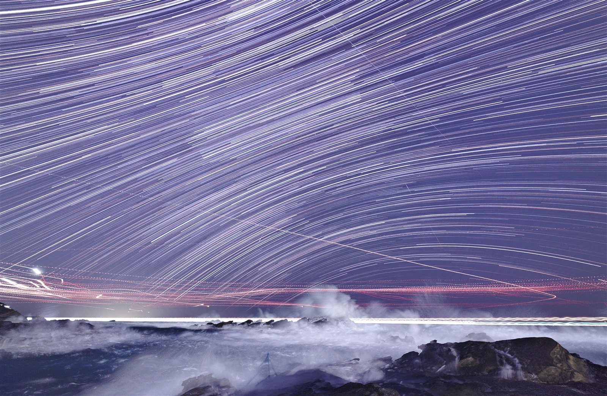
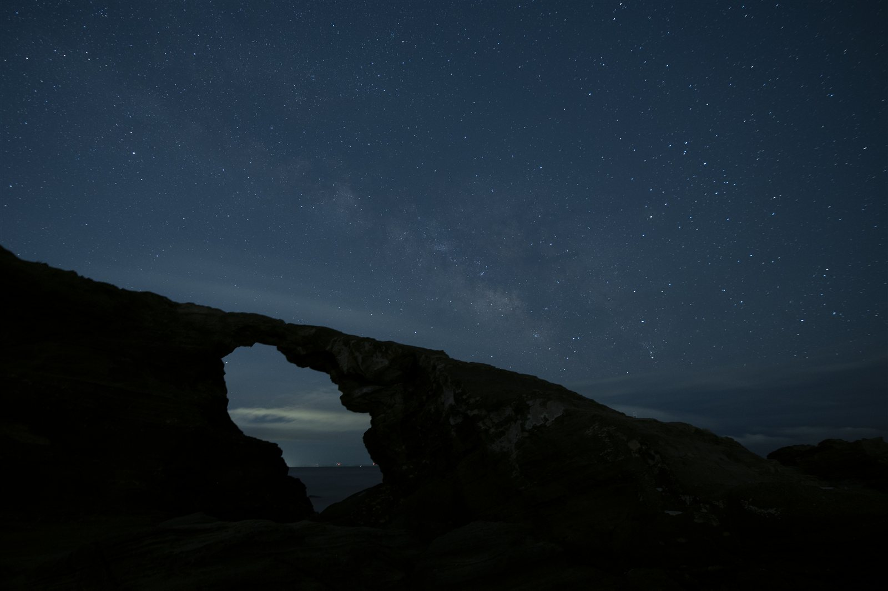
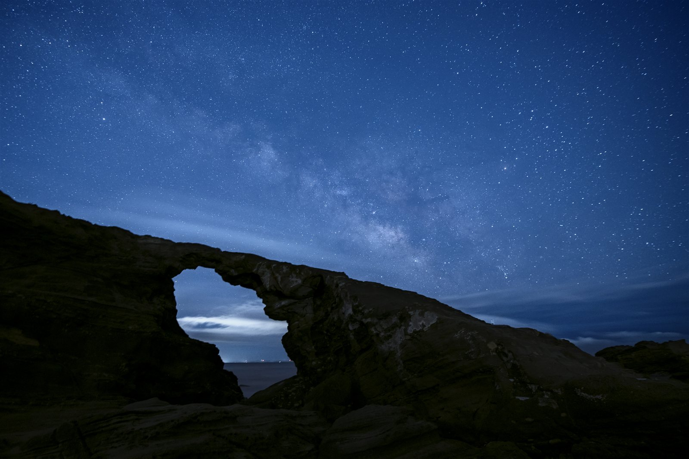

Still removing airplane trails
one frame at a time?
How many days does trail removal eat after a single night shoot?
Sidekick Star automates the exhausting part of star-landscape post-processing in Photoshop —
airplane trail removal, Milky Way development, light-stacking — all handled by the script.
No credit card required · Full features · 3-month trial
Purchase price ¥9,800 (one-time, tax included)

One week of hand work,
done overnight by your PC.
Detects and removes only artificial light trails — airplanes, cars, ships — from light-stacked source frames. Twenty years of trail-removal judgment, distilled into a script.
Does the "post-processing grind" sound familiar?
Star landscape photographers lose the most time not in the field, but in the repetitive work that comes after.
One night of shooting, one week of manual work — making the same judgment call hundreds of times.
You know you captured it, but straight RAW development makes the Milky Way nearly invisible.
The digital curse — gaps appear in star trails between frames. Film never had this problem.
The creative finishing you actually wanted to do gets buried inside the repetitive grind.
Let the tool handle the repetition. You focus on the creative work only you can do.
Same RAW, same single exposure.
The difference is development judgment and enhancement.
"I shot it but the Milky Way won't appear" — comparing Photoshop default RAW development against Sidekick Star development plus Milky Way enhancement.


Not an "AI tool" —
a workflow assistant for the field.
Sidekick Star runs as a Photoshop JSX script. No cloud upload. Everything stays on your machine. It does exactly what you would do by hand — just without you having to be there.
Everything that drains you in post-processing, covered.
Not just trail removal. Sidekick Star handles the entire repetitive workflow after a night shoot.
Airplane, car, and ship trail auto-removal
A proprietary 2-stage process that detects and removes artificial light trails from light-stacked source frames. 1 week of hand work → overnight. Method not disclosed.
Milky Way development and enhancement
From RAW development through Milky Way enhancement — Murata's own workflow, encoded as a script. Solves "I shot it but it won't appear."
Film finish — broken trails into continuous arcs
Converts broken star trail dashes into smooth continuous arcs using pixel-count-based auto-calculation. Solves the digital light-stacking curse.
Test-frame exclusion, file sorting, light-stacking — all automatic
Statistical analysis of shooting intervals to auto-exclude test frames. Rename, stack, and light-stack in one pass. JSON settings reproduce your setup with one click next time.

A tool made by a photographer
who spent 20 years grinding through the same work.
Ichiro Murata has been shooting star landscapes in the field for over 20 years. Sidekick Star grew out of solving the exhaustion he actually faced in his own workflow — not hypothetical user problems.
"What am I personally worn out by?" — that's where the design started. That's why it works as a real-world workflow tool, not a demo.
To be precise: an AI model is used to detect airplane trails. But removal uses no generative AI or image synthesis of any kind.
"It does the same thing I'd do manually in Photoshop. No generative AI for removal — I pull pixels from other frames shot at the same location and overwrite the trail."
— Ichiro Murata (developer)A living tool, not a finished product.
I won't claim something works if it doesn't. Here's the honest current state. Features will continue to grow after purchase.
You're not on your own when something goes wrong
Technical issues, setup questions — I handle them directly.
A few real examples:
"Not sure if my GPU is being recognized. Airplane removal errors out and large batch jobs crash."
Confirmed RTX environment with a GPU check tool, distributed a patched script, adjusted block count for stable batch processing. Solved same day.
"AI mask generation finishes at 0/227. No idea what the error means."
Distributed a fix that auto-falls back to CPU when GPU is unsupported. Bug fixed and pushed to all users.
"Developed in another app first and now Sidekick won't run. Worried I did something wrong."
Walked through deleting the output folder and re-running. Solved in minutes. Original RAWs were untouched.
After purchase, reach me on X (@murata_photo) or the FAQ page any time.
with your own material.
No credit card · Full features · Cancel anytime
Confirm "trail removal just got easier" with your own eyes — then decide.
License key delivered by email after purchase (usually within a few hours)